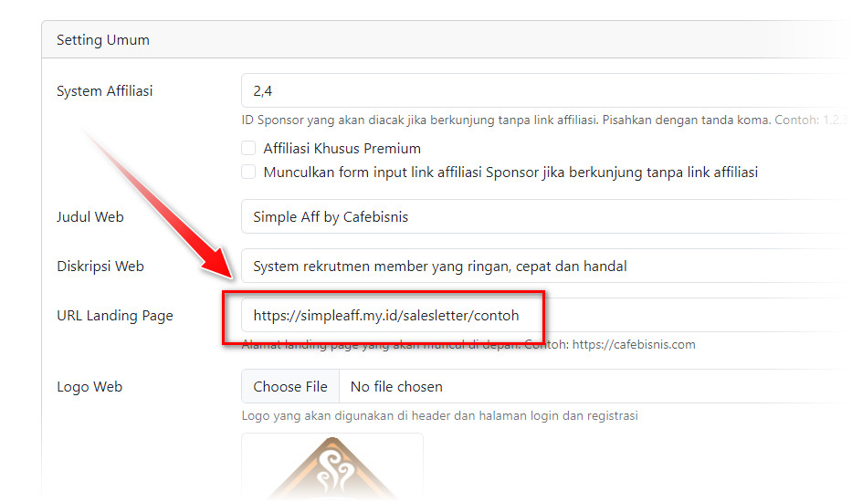

Terima kasih telah menginstall SimpleAff by Cafebisnis. Untuk mengubah halaman ini, silahkan buat dulu landing page di web lain (subdomain, folder atau domain lain).
Anda bisa membangunnya menggunakan HTML atau WordPress atau web pembuatan landing page lain.
Jika sudah memiliki alamat landing page, masukkan URL-nya di menu Settings - Umum pada opsi URL Landing Page
